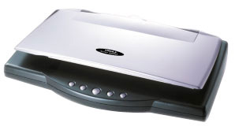

Scanner.html

ในทางคอมพิวเตอร์ เครื่องกราดภาพ คืออุปกรณ์ที่ใช้ถ่ายโอนรูปภาพหรือข้อความลงในคอมพิวเตอร์ เครื่องกราดภาพบางชนิดยังมีรูปแบบพิเศษในการกราดภาพเชิงลบหรือกราดภาพหนังสือ ในคอมพิวเตอร์ สัญญาณจากเครื่องกราดภาพจะถูกถ่ายโอนไปยังรูปดิจิทัล ภาพนี้สามารถแก้ไข, พิมพ์ ฯลฯ เครื่องกราดภาพทั้งหมดมีส่วนพิเศษที่ใช้ในการถ่ายภาพจากวัตถุ